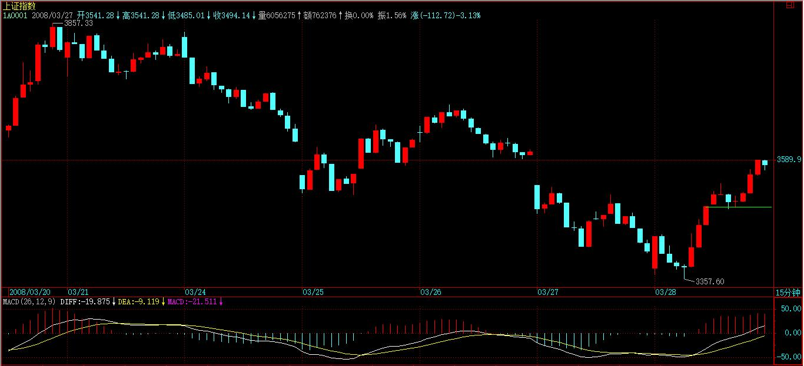
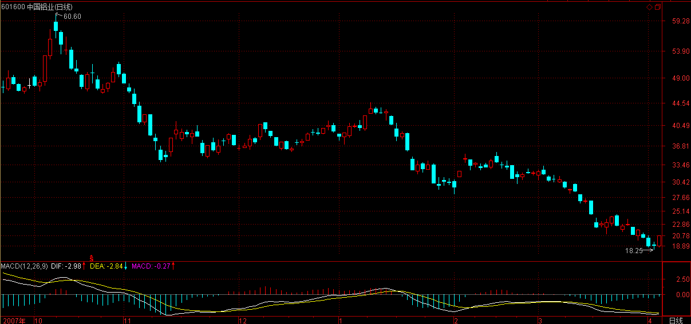

(2008-03-26 15:47:42)
本不想写东西，看了看中国队的比赛，突然发现还是写东西有点意义。【韶山映山红】2008年3月26日，2010年南非世界杯亚太区小组赛，在昆明，中国队对阵澳大利亚。看球？还是写东西有点意义。】
本ID的理论是一个超级完美的理论，第一是在数学的角度超级完美，其次，是在物理的角度超级完美。物理角度，以前说的不多，因为这需要的思维方式，同样要有一个大的改变。【韶山映山红】数学的角度超级完美，是走势类型的几何结构，是形态学。物理的角度超级完美，是能量动力结构，是动力学。】
有些工科或老一代理科的，对现代物理一点概念都没有，以为能量动力，就如同牛顿时代，用各种微积分或各种级数等等无聊算法就是了。【韶山映山红】能量动力，是现代物理的范式，缠论动力学不是牛顿力学和运动学能够完全解释的。】
现代物理的一个核心概念，就是物理与几何的高度统一。本质上，现代物理就是一门几何学，只不过是各种不同高深的几何学。而几何学也不是一般认为的那些几何学，几何的领域，可以涵盖并超越你思维的所有方面。
广义相对论是第一种真正意义上的现代物理学，而其基础是几何，一种比较简单的几何学。而后面，到规范场、超弦、膜空间等等，就涉及各种超越一般人直观的几何了。
【韶山映山红】ajiao99999：广义相对论又称为时空几何动力学，他把引力场归结为物体周围的时空扭曲，把物体的运动，归结为物体在弯曲时空时沿短程线的自由运动。这样说抽象，娇简单比喻下；弯曲的河流，使四维空间扭曲，河流的运动就是沿扭曲时空的短程线运动。也就是河流的结构造成时空扭曲，扭曲的时空，教河流如何运动。】
【韶山映山红】John Wheeler：Matter tells spacetime how to curve . Spacetime tells matter how to move. 物质决定空间如何弯曲，空间决定物质如何运动。】
在那些几何学里，能量、动力等结构对应着一些特殊的几何结构。这才是现代物理的主流。
对于一般人来说，广义相对论可能是最简单的了。那里，物质结构与几何结构是高度统一的，而诸如引力结构等对应着一些特殊的几何结构，如果有兴趣，可以找本广义相对论的课程看看，看看这种几何结构的威力。
【韶山映山红】ajiao99999：广义相对论的核心----引力场方程，是几何动力学的集中体现。该方程等号的一边是物质系统的能量，动量分布以及变化情况。另外一边是物质系统所激发的引力场四维空间的扭曲情况。 这样就很好玩了 ，该等式方程就表示引力场的弯曲时空结构具有动力学机制。就是物质及其引力场的动力学等同于引力场时空的非欧几何。运用到市场，用娇的话说，就是价格的几何结构蕴含能量。这个几何结构的能量动量分布状态表现在其独特的几何结构里。在这个结构中，彼此间角度是非常重要部分。】
而本ID的理论，本质上是站在这种现代物理的角度构建自己的能量动力学结构的。【韶山映山红】说结构动力学还不够准确，能量动力学更符合缠论。】这里，一切都是几何结构说了算，一切的能量动力形态，都变几何化，因此，必须有这种思维上的根本改变，才会有真正的理解。【韶山映山红】形态即动力，动力必形态。】
否则，还是牛顿时代那种弱智思维，那就将陷入一种机械化思维的陷阱中。
【韶山映山红】能量动力学结构的缠论，为啥不怎么讲能量？
“而本 ID 的理论，本质上是站在这种现代物理的角度构建自己的能量动力学结构的。”
缠论的本质是能量动力学结构，那么，为什么主要篇幅用来讲结构的形态学？很少讲动力学，更不怎么去讲能量？
因为，走势分析，是没有能量守恒的，还怎么讲？甚至，也没有动能转化，所以，动力学也只能从描述的角度去阐释。
2019/10/17 11:22 】
【韶山映山红】能量动力学结构的缠论，级别是形态结构的中枢递归形成的。为什么不直接用能量结构来描述级别？★可以做个专题，以后研究。】
具体怎么样，以后慢慢说来。
好，去看看中国队如何收场，下，再见。
(2008-03-27 15:17:41)
今天的走势，昨天已经说得很清楚了，就是上次580989从0.4下启动时的翻版，那次同时带动了大盘的破位，这次如出一辙。【韶山映山红】580989南航JTP1。】
各位可以对比一下上次的走势，
后面的走势是否继续一样，这是一个很值得关注的问题。【韶山映山红】580989南航JTP1，神一般的存在，现在没有了。以后研究。★★】
如果走势继续一样，那么惯性下探后，大盘会再次回到破位前的平台。3424点的位置，由于有3%的确认空间，所以目前并不能说这位置就被有效跌破了。
当然，这位置如果跌破，那么，下面真正有效的位置就是2500点了。记得当时本ID把震荡空间定到2500点时，有人觉得本ID夸张，现在看来，一点都不夸张。

其实，目前的市场情绪已经开始扭曲，因为管理层的不作为，市场只能以破发竞赛来宣泄情绪，这其实是极端危险的状况，管理层的信誉，在这样的市场情绪宣泄中走向破产，以后如何修复，只有天知道了。
市场现在就是以这样的逻辑来回应管理层的逻辑，管理层不作为让市场的再融资没有规则，那么，市场就让市场本身的融资彻底破产，如果这局面不被控制，那么这场闹剧很可能要演化到有新股一开盘就跌破发行价，让市场完全失去基本功能，一旦这种局面出现，你说2500点很奇怪吗？
当然，作为市场的参与者，都不希望市场各方以这种对抗性的方式进行下去，这样只能损害市场本身。但球在管理层那里，他们不作为，市场也只好如此了。
由于市场重心的下移，我们所需要关注的低价股的价格也需要有所下移。但原则是一样的，就是低价、题材、更重要的是，一定要来回折腾。
至于破发走势制造的破发板块，从纯投机的角度，将蕴藏着一定的市场机会，不过这需要的操作水平以及政策敏感度比较高，没这水平的不一定要关注。
580989，昨天说得很明确，0.7上下的短线中枢是关键，今天冲高后马上30%回头到这中枢，显示的这中枢的强大威力，同时也证明，这次的上冲只是一个中枢，是一个盘整类型，后面的波动就看这中枢的第三类买卖点问题了。【韶山映山红】580989南航JTP1。】
注意，580989是最后一波害人行情，一般人一定要远离。
先下，再见。
(2008-03-27 15:47:33)
为什么英格兰队特别值得关注？一个很重要的原因，就是这世界上真没有一个队这么像英格兰如此地有特点，又如此地神经刀，如此地人性一样有趣而不可信任。如同具有一堆很有特点的零件，如何连接成一个有机的整体，这成了全世界最顶级教练都感兴趣的事情。
有人说，英格兰现在就缺一个组织型中场，有一个加斯科因就如何如何了。这是废话，如果英格兰队有这又有那，这还是现在的英格兰队吗？还需要向世界上最顶级的教练提出最严重的技术挑战吗？
现在，最大的现实就是，英格兰队因为英超的过分成功，使得本土球员都零件化了。而更大的问题是，这些零件是不完全配套的，不是成套制生产的，在这种条件下，如何因地制宜、创造性地粘合出一个整体、一个有杀伤力其有稳定性并有纪律性的整体，是给全世界最顶级教练提出的最大难题之一。
什么是顶级教练？就是用二、三流球员也能粘合出一个一流球队的教练，而卡佩罗显然具有这样的潜力并正逐步为我们显示这种潜力。
今早，卡式英格兰队在上半场已经显示出其迷人的特质。要知道，法国队可是这世界上最难缠的球队了。巴西队够牛，但在世界杯已经N十年倒在法国人脚下。但在今天的上半场，英格兰队在场上所制造的气场一度把那无敌的法式气场给压制住、牵引住了。至于那点球，并不能抹杀这质的进步。这是很多年来英格兰队的比赛中绝无仅有的情况，就算那次空前大概也要绝后的在德国主场5比1战胜德国人的比赛中都不曾存在。
下半场的比赛，纯粹是为了考察球员状态，没有太多的技术含量，而且事实上也证明，原来英格兰队所固有的442阵型确实已经不适合目前的队员，因为442所需要的一些零件，他们没有。
卡佩罗正走上正确的道路，而且以其之精明与性格，一定能在这道路上坚持下去。现在，卡佩罗大概最需要的就是根据已经有的蓝图，发现更好的零件、并让各位置都有分量相当的零件备份。
(2008-03-28 15:12:27)

N周前的再展望，本ID给出了这轮下跌最可能的3424点的下跌结束位置，【韶山映山红】“而4778点刚好是6124点下来的1345点，3600点的3/8，因此，下一个低点，最值得关注的是其两倍的位置，也就是6/8的位置，相应是3424点，如果没有特殊的全球性崩盘事件，该点位上下最终形成“抑”的底部的可能性极大。”2008.03.20】6124点下来的2700点，【韶山映山红】6124-2700=3424】3600的3/4，【韶山映山红】3600*3/4=2700】而第一次4778点，【韶山映山红】6124-4778=1346】刚好是3/8，【韶山映山红】3600*3/8=1350】
今天这个位置初步显示其威力。
注意，一个最基本的技术常识，任何技术位置都有一个上下3%的允许空间。由于这世界上脑子有水的人太多，所以必须再说一次。例如，上次从4778点开始的反弹，本ID说结束的位置在900点，3600的1/4处，也就是5678点，最后结束的位置在5522点，完全在5678点的3%空间内，【韶山映山红】5508-5848】但有些人为了没有最终到5678点祥林嫂了一个月，这是什么人？自己没常识，蠢还要满大街告诉所有的人，这世界多的就是这种人。这种人不死，市场哪里还有天理？
而昨天也说了，和上次580989在0.4下启动那次一样，引领大盘破底后，大盘最终又再次回到破底前的平台，【韶山映山红】580989南航JTP1。】今天的走势证明，这太阳底下，新鲜事并不多。
但一定要更注意的是，由于今天的上扬甚至不足以在日线上制造一个底分型，
而今天上扬受到诸多传闻的引诱，一旦这些传闻下周没兑现，就不排除又有一个杀跌回试的过程，因此，3424点最终能否成为底部，现在根本没有任何最终的结论，必须采取灵活的策略应付之，而不是脑子里一根筋。
超短线的角度，3499点是关键位置，【韶山映山红】3499点是30分钟底分型区间的上沿。】一旦站不住，再次探底就不可避免。【韶山映山红】站不住就不可避免再次探底，依据是什么？★可以做个专题，以后研究。】当然，只要能站住3499点上，那么行情就有希望，因此该位置极端重要。【韶山映山红】底部分型构成中阴中枢，中枢移动站上分型区间，形成新走势的中枢，再次探底的关键位置不是中枢下沿，而是底分型上沿，依据是什么？★可以做个专题，以后研究。】

【韶山映山红】这次没有用60分钟K线的底分型。60分钟K线底分型的这个点位由于包含关系而被处理掉了。但是底分型依然有相应的区间，为什么不是调高关键点位，而是改用30分钟K线呢？以后研究。★★是因为拉起、超过左元素的K线不希望被忽略？】
超短线可以看下周初，5分钟MACD是否最终演化为红柱子不能再伸长而比前一柱子面积小的情况，
对应着15分钟MACD的0轴能否被突破，一旦不行，肯定要回试诸如3499点这样位置的支持。

当然，高明的并不需要等3499点真跌破再走。
对于小资金，原则已经多次说了，就是抓准机会咬一口，一看不能延续就先跑。这次从5522点下来，用这个原则抄了无数次底，都能按技术把钱赚了又先跑出来，就证明，下跌其实没什么大不了的，关键你能折腾，折腾好了，下跌一样是天堂。
当然，前面说了，对于大资金，现在折腾时一定要注意沉淀筹码，大资金和小资金不同，小资金1秒钟就可以把仓位建好，大资金可没这本事，因此必须有沉淀筹码的动作。
注意，从5522点下来，本ID直到最近才给出大资金需要沉淀筹码的要求，为什么？因此以前离底部还远，所以根本不存在沉淀筹码的问题，而到了目前的位置，就算3424点最终不能底部，下面的也不过是空头陷阱了，对于大资金来说，根本不算什么，所以，现在开始沉淀筹码，完全对头。
周末，股票一边歇去。
先下，再见。
(2008-03-31 15:16:35)
在上周都比较兴奋时，本ID已经明确说，一旦传闻不兑现，又是一轮回试。至于给出的3499点，更成为今天震荡的中心，尾盘最终也没站住。
由于该位置今天是震荡中心，所以明天如果能站上去，大盘还有点戏，否则，继续探底就不可避免了。底部不是一天成的，今天显然已经比以前类似的情况走得稍好一点，显示已经有一点新资金介入并对此位置有一定的信心，否则，今天将是单边下跌。因此，明天的走势很关键，如果能回拉上去，证明新资金的信心还是比较足。
但是，多次说了，现在需要的是干货。没有干货，任何信心都会被磨掉。没有干货，谁说话都是废话，市场能领情吗？废话说多了，只能显示自己的无能，这点，有眼睛的人都看得清楚。
其他也没什么可说的，现在就是等待，今天是月线和季线收盘，有兴趣的自己去看看，中线形势有多恶劣。这里不起来，季线上就有极大机会形成向下的笔，这意味着什么，自己想去。
现在主管金融的人，其办事风格是十分怪异的，这点，本ID有太多了解了。该来的没来，也只好这样了。
天灾不可怕，因此，对非系统性风险，要有时刻的提防。对于散户来说，咬一口就跑，与机会再咬一口，这是最好的策略。【韶山映山红】遇机会再咬一口。】
先下，再见。
(2008-03-31 16:01:17)
帖子不想写，写首七律，画个像，可千万别对号入座。
兽语
缠中说禅
鹰飞鹿走虎狼谋
凤附龙攀蛇鼠殴
岂有官场不拍马
何时政客少吹牛
眼空惟见云中鹤
名大须谈海上鸥
豕喙驴唇鸦鸭嘴
犬羊螂雀更鸡猴
(2008-04-01 06:50:33)
写完兽语，不画一漫画，总少了点什么。早上起来，花5分钟时间把这漫画补上。
国朝公仆
缠中说禅
国朝公仆竞清廉
各执鸡毛扮老阎
软硬短长双手搏
青红皂白一身兼
心花暗逐顶花放
眼水长随口水淹
万丈云梯骨堆就
千年竹更美名添
(2008-04-01 15:16:38)
别让本ID看不起，每次短线，本ID都把最后的走人位说得一清二楚，就象这次的3499，今天早上连续冲了两次不行，就开始大幅度下行，
如果你这你都看不明白，还是去孔男人那里吧，你这样的水平在这里只有丢人的份。或者就自知之明一点，在自己额头上写好永不短线，因为自己无能。
最鄙视那些自己没本事，又要怀疑别人的人。你没本事短线不代表短线在下跌中就不行，为什么每次本ID都能顺利出来？按本ID最后的位置，如果你没更高的本事，你哪一次不能出来的？
现在，有本事的人将要干什么，就是马上迎接新的短线机会。这机会在破底后很快到来。其实，很多股票，回跌10%到20%后，今天尾盘就可以回补，特别资金大的。
现在，一个标准的下降通道，到下轨就可以短线，
如果破下轨加速，那就要放爆竹了，大的反弹马上就在眼前，
这都是最基本的技术常识，有什么难度？
那管理层爱干什么干什么，本ID就陪他们玩到2500，1500也无所谓，反正有本事的人钱就越来越多，到时候再大买便宜货，从1990年和他们玩了快20年了，谁怕谁呀。【韶山映山红】经国务院授权，由中国人民银行批准建立的上海证券交易所创立于1990年11月26日，1990年12月19日开始正式营业。当时的上海市市长朱镕基出席了开业典礼。最初8只股票、22只债券。上证综合指数000001是最早发布的指数，是以上证所挂牌上市的全部股票为计算范围，以发行量为权数的加权综合股价指数。这一指数自1991年7月15日起开始实时发布，基日定为1990年12月19日，基日指数定为100点。】
【韶山映山红】缠师1990年开始炒股。当年刚上大学，17岁。】
这世界，只能靠自己的本事，哀求别人救你，有可能吗？本ID早说了，绝对不能依靠任何东西，即使那玩意叫政府。这就是本ID从1990年开始的最大经验之一。
本ID越来越感觉到，本年度最大的赚钱机会越来越近了，让孔男人哀号去，求政府去，我们开始磨刀霍霍了。
先下，再见。
(2008-04-01 15:59:39)
一个成熟的市场经济，其市场中心地位的就是资本市场，资本市场的任何风吹草动，都是国家级的大事。看看，这次次贷危机，美国股市的实际跌幅度一点都不大，连20%都没有。但已经是朝野倾动而出，用进一切的金融、财政、政府等的资源来稳定资本市场。为什么在美国以及西方所有的成熟市场经济国家，资本市场具有如此举足轻重的地位？因为，这是他们经济结构的核心，后面代表着最大多数人的利益。也就是说，这些成熟的市场经济国家，其经济已经进化到如此的境地，绝大多数公民的经济利益都与资本市场密切相关，而经济基础决定上层建筑，自然，没有任何的政府机构敢对资本市场有丝毫的怠慢。
而现在，中国的资本市场还远远达不到这样的地位，因为中国的市场经济依然在极为落后的阶段，资本市场可以说暂时只是一种点缀，本质上，在经济结构中还没有任何实质的地位。
因为，在中国，目前与资本市场利益相关联的，只是所谓中产阶级以上的阶层人的利益，而目前中国更多数的人，是与资本市场无关的，而他们所代表的是一种与市场经济相对无关的经济结构。而在整体的国家经济利益的取向中，牺牲少数以换取多数，显然是一个最被采纳的选择。
因此，例如在现在CPI与GDP的两难抉择中，资本价格的压制又被人错误地认为是压制CPI的好手段，因此，牺牲资本市场就成为最符合这种经济逻辑的选择了。
可以断言，在中产阶级以上阶层占据社会人口最大部分之前，这种利益的偏向都无可避免，对此没有明确的认识，不仅会对诸多中国特有的经济现象产生迷糊，也会对自身的操作产生重大影响。
其次，按照服务型政府的原则，资本市场的监管机构，本质上是市场的服务者，但现阶段，显然远远达不到如此的要求，否则，例如平安事件，就不会一拖几个月都毫无结果。而对于一个服务型的机构，这是显然的不作为行为，应该受到相应的监督、纠正甚至惩罚的。
看清本质，你才能有真正的力量。
(2008-04-02 15:17:01)
今天，如期反弹，然后大幅度震荡。一般这种走势，最好就是进行对冲式操作，或者如昨天本ID所说，昨天尾盘就可以先介入。
现在，短线最关键位置在3462点，明白本ID的理论的，都知道在这位置为什么重要。【韶山映山红】3462点是什么来历？可能是历史数据的差别。飞狐历史数据60分钟底分型的上沿是3461.02。有网友留言说“新的底分型上沿3462.02点”。】
今天下午冲到该位置，站不住，所以就出现大幅度震荡。【韶山映山红】下午高位，飞狐历史数据是3463.97点，通达信历史数据是3464.53点。】但尾盘依然有资金再度介入，这样，这次反弹可以再来一次，高位出的下来又可以回补再来一次。
但下面，关键还是看3462点，只要再冲不过，那么大盘依然有继续破底的机会。短线就是要来回折腾，一看不行先回来，一看行了，甚至可以打点提前量，例如为了避开T+1，可以在前一天的尾盘。
个股方面，金融股已经率先走强，但这走强是否有延续性，是否能向地产、有色等蔓延，是行情能否延续的关键。题材股经过大洗盘，还会重来，但暂时以反弹为主。
这几天很难打开，系统好象也不稳定，不多写了，先下，再见。
新浪网友
是新的底分型上沿3462.02点,学艺不精,见笑了【韶山映山红】飞狐历史数据60分钟底分型的上沿是3461.02。】
2008-4-2 15:37
tryrtytry
3462点：60分钟，底分型上沿，注意3462点后两K线与今早首K线为包含关系。
2008-4-2 15:58
春雨秋花
普通 2008-04-02 15:32:19
那位学长给解释一下3462是什么点？俺咋怎么也找不到呢？郁闷 ^_^
============
60分图上4月1日11：30K线的上沿，如果能站上去，底分型成立，如果站不上去还会继续向下寻底
2008-4-2 16:24
(2008-04-03 15:24:59)
今天的走势大概出乎很多人的意外，但一定不包括本ID以及昨天看了本ID解盘的人。昨天的解盘很明确地告诉你要再来一次，请问，这一次爽吗？

昨天，更说了金融向地产或有色等蔓延的问题，今天，那聪明的驴的表现，请问爽了没有？有人昨天说，不是题材股吗？但难道这些云铝中铝不是本ID股票池子里的？50、60跑的，20下买点回来，难道有罪呀？简直病的不轻。【韶山映山红】601600中国铝业】

兵无常形，如果要走一波本年度最大级别的向上走势，中字头不启动怎么可能完成？题材股当然要继续，但一波完整的行情，就是一、二、三线的轮动次序，这不最简单的道理，有什么可说的？
当然，这一切暂时还只是蓝图，因为实际的行情并没有走出来，暂时先当成反弹来干是比较靠谱的，一旦形势不对，反手狠砸，不亦快哉？
显然，昨天说的3462点，今天起了明显的作用，大盘最终在该点位前放下步伐。由于今天搏消息的比较多，所以尾盘小跳让人出来也是应该的。
下周是很关键的一周，因为日以及周是否能底分型，就看这了。
当然，短线这一切，都可以简化为3462点能否有效站住的问题，一旦能站住，这些分型都不成为问题了。
个股方面，注意一线股的轮动次序，注意新资金流向。另外，如果周一没消息，注意回杀力度，如果力度不大，反而证明这行情真有戏了。
今天的走势图，超级技术化，留一个作业：13点30分到2点这段时间具体什么的技术意义，为什么一站住某位置后，就马上出现大的突破，向上攻击3462点。
【韶山映山红】3396点，60分钟的底分型区间的上沿。飞狐数据为3397.39点。】
提前一天收市，简直太美好了，清明时节雨纷纷，水为财。
先下，再见。
(2008-04-07 15:21:25)
大盘今天突破短线关键位置3462点后一马平川，
60分钟上N个月来第一次延伸出向上笔走势，显然了大盘的短线强势。【韶山映山红】没有“N个月”，一个月前就有向上笔。】
周五解盘已经特别指出，如果周末没消息而大盘反应并不过烈，反而证明大盘行情真有戏了，今天的走势恰好证明了这一点。
个股方面，中驴为代表的有色继续驴性大发，【韶山映山红】601600中国铝业】
但要注意，这次启动的板块，都是回弹20-30%左右进入调整，例如地产、金融等，因此，有色能否改变这局面，暂时是有疑问的。
现在，3613点已经成为中短线关键位置，因为这位置是否突破决定大盘能否延伸出日线上的向上笔，【韶山映山红】3613点，日线底分型上沿，“中短线”。】
而今天的走势，由于已经突破3555点，【韶山映山红】3555点，上周K线高点。】因此，周线上形成底分型的可能性极大，除非在本周内出现再破底。因此，中线上，我们一直预言的本年度最大行情成立的几率已经越来越大。
当然，最安全的作法还见一步走一步，只要3613点攻击不破，就可以先对筹码进入相应调整，以应付后面的震荡走势。
虽然本ID一早就明确3424点附近将出现中线底部，但真走出来，我们反而要冷静。不能在操作上留下遗憾。而且，如果真是中线底部，在真正突破之前，洗盘震荡还少不了，所以，一定要按图作业。
上周的问题，只和60分钟的底分型相关，3396点，突破后延伸出笔，这样经典的案例，请多研究。【韶山映山红】3396点，60分钟的底分型区间的上沿。飞狐历史数据为3397.39点。】

先下，再见。
(2008-04-07 16:05:58)
几千年来，中国人在政府、衙门面前就从来没抬起过头，即使改朝换代，最终这奴才心理还是改不了。
而实质上，政府、衙门是我们的奴才，没有我们，哪里有什么政府、衙门，是我们的血汗供养了这些机构。面对这些机构，任何人都应该腰杆笔直。
可惜，实质上，绝大多数的人还是不自觉地、完全集体无意识地当了政府、衙门的奴才，例如，在资本市场上，例如现在还在叫嚣的救市言论。
本质上，根本不存在政府衙门那种从上而下施舍性的救市，问题的实质，只是要让这些奴才改正他们的错误，当然，如果奴才不好听，那么，我们就用公仆这个词。
没有救市，也无须救市，有的只是纠错。错了就要承认，就要改，就这么简单。
可惜，大多数的人的思维都扭了，都在等待所谓的施舍，这样，中国的资本市场、中国的现代化真是遥遥无期了。
衙门型的管理机构与服务型的管理机构相比，最大的特点就是行为完全脱离实际，所有的应对措施都严重慢几拍。例如，过去两年，面对快速的上涨，最简单的经济学常识都可以提供最简单有效的应对措施，就是快速加大供给。而供给的加大是要有时效性的，过了那时间，这措施就对不上点了。那么，请看实际上管理机构不仅没有加大供给，反而是提供了流通比例极低的疑似非法蓝筹，这难道不是典型的火上加油吗？
衙门型管理机构，甚至可以有这样一种可怕的思维，跌比涨好，跌就是安全，资本市场里的人的行为最好都完全统一到银行存款行为上去，这样就不惹事，不惹事就是最大的好事。正因为这十几年那如此思维的存在，因为中国的资本市场走势都显示出最大的投机性，因为大家都知道上涨的时日无多，一旦有机会就变本加厉地投机，尽量在最短时间内把最大的利润拿到手。
正因为管理层与投资者的心态都在这样一种氛围下，所以，那种稳健的长线行情就不可能真正出现，大起大落成为真正的常态。而这时候，还提防止市场大起大落就成为一件很滑稽的事情，成为衙门型管理机构语言的一个标准范本。请问，一年不到，从3400点到6124点又回到3400点还不是大起大落？一个已经是事实的东西，还能或还需要防止什么？
我们不希望再有类似的无聊衙门言论，我们也希望我们所有的投资者都要站立起来，知道自己的力量，市场是我们创造的，我们是市场的真正创造者，我们才是市场真正的主人，我们必须要用我们的力量彻底改变这一切。
(2008-04-08 15:19:39)
昨天给了短线的关键位置3613点，今天全天就是围绕着震荡，连收盘就在3612.5就知道，该点确实如期发挥了作用。
现在的问题很简单，站得住3613点，就继续上攻，否则就出现一个大的调整。所以，本周就看着该点就可以了。
个股方面，板块轮动加速，现在问题的关键是轮动后首先调整的板块能否再次启动，能，那大盘就肯定有戏，否则至少要调整一下。
目前，整个次序大致是地产、金融、有色、券商，然后今天是所有几乎大的题材都动了一下，创投、农业、三通、环保等等，因此，后面还是要看金融地产能否再次启动。
当然，一些小板块的轮动还会继续，但对于大局，这些都没多大的意义。行情，关键要看大角度。
大家应该注意到，本ID最近一直只用给级别的分型来统一进行分析，其实就是想告诉各位，你把一招真学会了，绝大多数的问题都能解决，这就是示范，请把这次整个探底到回升的整个过程好好研究，课程等这个示范以后再写。
不想说了，留点精力今晚熬夜看球，先下，再见。
(2008-04-09 15:16:57)
今天的走势极端技术化，前面已经明确说了，只要站不住3613点，就要再次探底。
今天低开后，在60分钟刚好跌破顶分型的下边，

早上那标准的回抽，极端显然地上不了3613点，因此确认这对顶分型下边的跌破是有效的，【韶山映山红】跳空低开，形成向下线段，反弹的向上线段内部盘整背驰的时候没有新高。】
因此后面的下跌就顺理成章了，为什么？因为向下要形成笔。
现在的走势很显然了，向上的笔后形成向下笔的调整，也就力度最大那种调整，【韶山映山红】“力度最大那种调整”？★】
因此，后面在向下笔结束前，都不适宜再度介入。但一旦向下笔结束，就又有一次美妙的短差机会。【韶山映山红】极度可能出现线段类盘整背驰。】
各位，看到没有，就用一个简单的60分钟分型结构是否延伸为笔，我们就能完全把握这样的走势与相应的退出，现在，我们只需要等待新的买点出现，如此简单而已。【韶山映山红】60分钟分型结构与笔的构成，做走势分析与买卖点判断。】
个股方面，昨天已经明确说了，只要地产不能重新启动，就有问题，今天万科等的走势，一个标准的短线多头陷阱，因此，引发回跌再正常不过了。
当然，就算有真行情，也需要大的洗盘，但是否洗盘还是继续下跌，其实根本不重要，我们只关心下一个买点，把走势支解了进行操作，我们不废那个脑子。
让脑子有水的人继续争论是否有真的行情，他们负责争论，我们负责挣钱，还有精力的，今晚继续加班看球。
先下，再见。
(2008-04-09 17:18:29)
咱别管那些无聊的俗人，让他们被股票之类的无聊玩意折腾去。
春天来了，正好沐浴一番。
春沐
缠中说禅
春沐瑶池水
鸳鸯共爱河
酒酣仙女座
情幻曼佗罗
玉露醒时少
喧风醉处多
欲回星路渺
晓色自清波
(2008-04-10 15:25:06)
网络超级慢，登陆就用了10几分钟，什么写东西的心情都没有了。随便说两句。
今天，又一个完美的短线机会，60分钟的底分型成立，而3533点成短线关键位置，【韶山映山红】3533点，60分钟K线底分型区间的上沿。飞狐历史数据3534.55点。】
所谓的关键位置，就是站上去，大盘将继续延续反弹，也就是2次探底结束；
站不住，就必然再次探底，而且破底的机会极大。【韶山映山红】盘整向下走势的中枢在上部，反弹走势的中枢在下部，盘背不难。】
今天，煤炭、券商、滨海等甚至创出本次反弹的新高，这是好现象，证明至少有部分资金是勇敢做多了。现在，指数上要有大突破，还是要看金融、地产、有色等，不过先有板块裸奔起来，绝对是好现象。
思维要改，今年的行情不会是一条直线的，底部也要震荡个N回才爽的，不明白这点，就痛苦去吧。
注意节奏，自然就爽。
这破网，按一下，N久才有反应，简直浪费时间，
不想写了，先下，再见。
(2008-04-11 15:10:56)
本周折腾，最后的结果还是把周底分型给折腾出来了，该分型的上边在3840点，【韶山映山红】底分型上沿是左元素的。】
因此，该分型是否最终有效，延伸为向上笔，或者最终失败，只构成中继型，3840点就成了周级别的关键位置了。

今天，大盘全天在昨天所说的3533点下震荡，显示大盘不强，信心不足，大概是周末的心理压力，【韶山映山红】1分钟反弹中枢离开后有二卖倾向。】
因此，下周初，就看这60分钟级别的关键位置能否突破，不行，就再次探底。【韶山映山红】探3271的底。】

日线级别的对应位置在3613点，因此，3533、3613、3840，给出了一个市场运行的密码，由此，超短、短、中的走势都完全把握了。
【韶山映山红】中期，周线当前向下笔的底分型上沿3840点。】
【韶山映山红】短期，日线当前向下笔的底分型上沿3613点。】
【韶山映山红】超短期，60分钟当前向下笔的底分型上沿3533点。】
【韶山映山红】递归走势分析图看三个压力线。】
个股方面，板块继续轮动，但力度有所减弱，现在，只要金融、地产等不再次动起来，大盘就不会有大戏。
周末，快点远离股票，好好休息，身体第一。
先下，再见。
本课目录
教你炒股票104：几何结构与能量动力结构1破发竞赛宣泄市场情绪卡佩罗，正走上正确的道路3424点初显威力3499点继续决定短线命运七律：兽语（可别对号入座）漫画：七律--国朝公仆下一个短线机会又将来临现阶段中国资本市场的地位3462点成短线关键位置3462点如期发挥神奇作用3613点成中短线关键位置中国人，不要习惯性当政府的奴才。3613点如期发挥神奇作用3613点威力尽显五律：春沐3533点成短线关键位置周底分型成立令3840点成中线关键